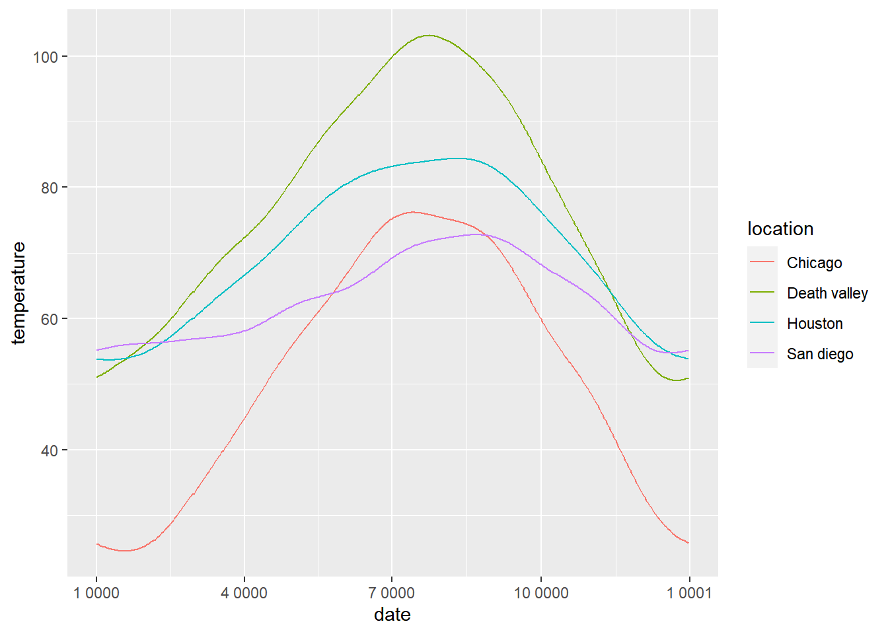
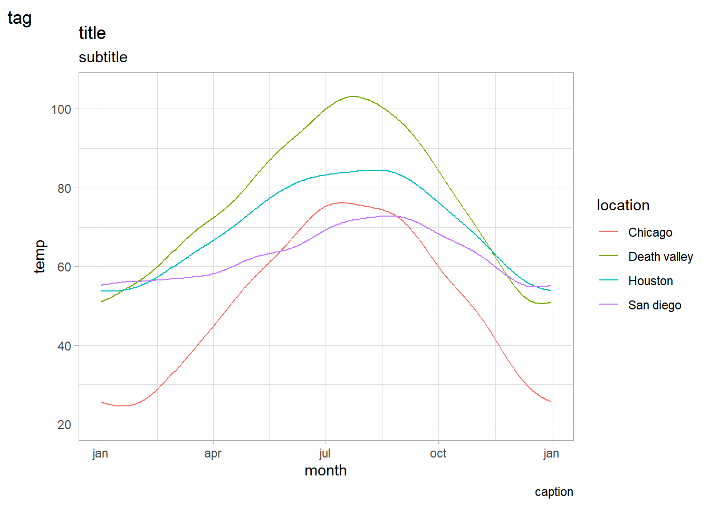
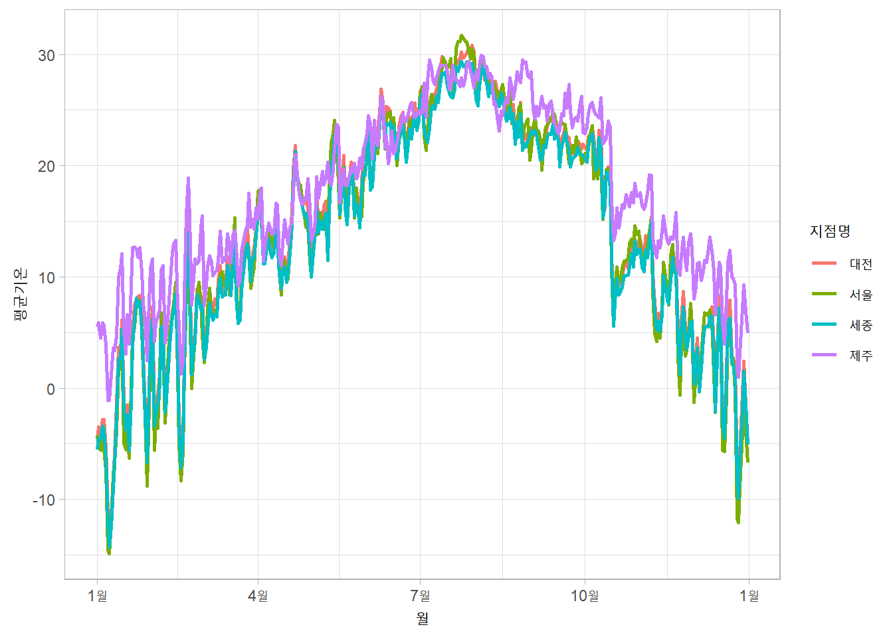
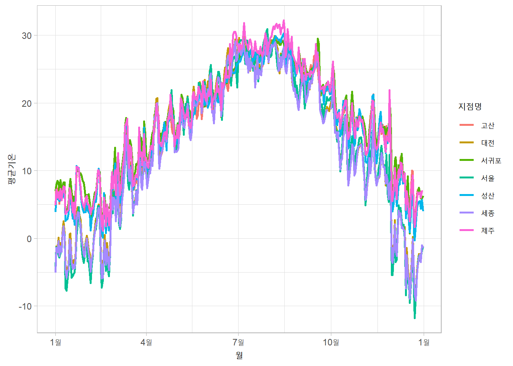
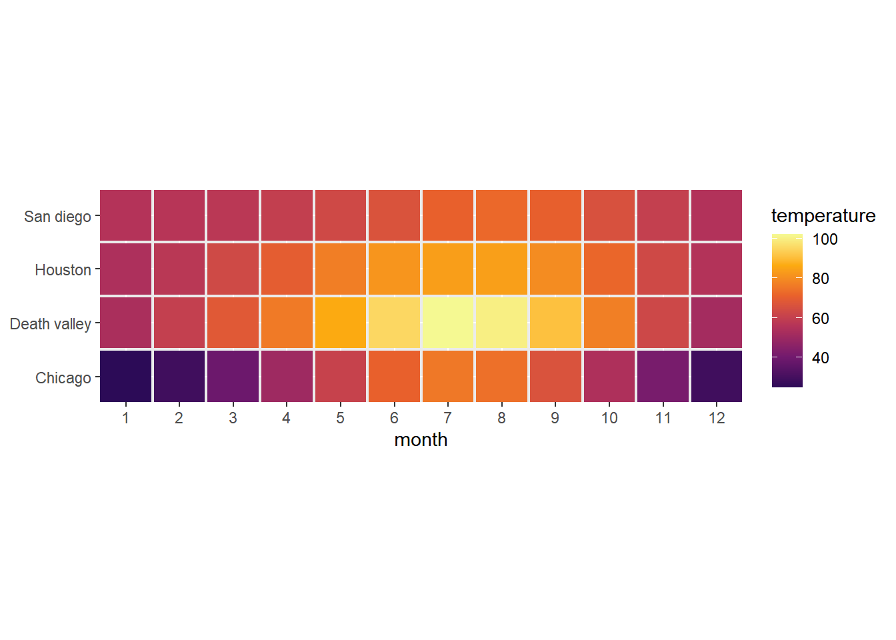
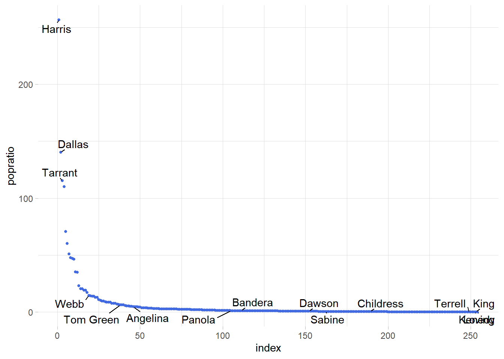
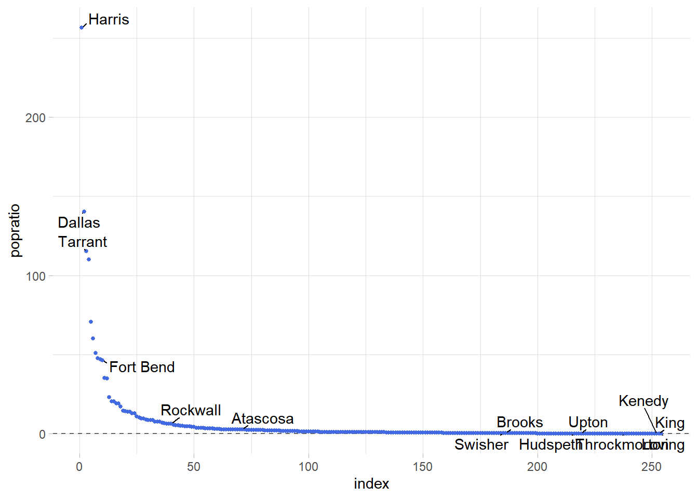

training markdown & GGplot
Rstudio
Data Visualization
2023/03/15
train markdown, ggplot
rm(list = ls())
library(ggplot2)
library(dplyr)
다음의 패키지를 부착합니다: 'dplyr'The following objects are masked from 'package:stats':
filter, lagThe following objects are masked from 'package:base':
intersect, setdiff, setequal, uniondata_raw <- read.csv("https://vincentarelbundock.github.io/Rdatasets/csv/ggplot2/mpg.csv")
data_raw %>% dim()[1] 234 12data_raw %>% head() X manufacturer model displ year cyl trans drv cty hwy fl class
1 1 audi a4 1.8 1999 4 auto(l5) f 18 29 p compact
2 2 audi a4 1.8 1999 4 manual(m5) f 21 29 p compact
3 3 audi a4 2.0 2008 4 manual(m6) f 20 31 p compact
4 4 audi a4 2.0 2008 4 auto(av) f 21 30 p compact
5 5 audi a4 2.8 1999 6 auto(l5) f 16 26 p compact
6 6 audi a4 2.8 1999 6 manual(m5) f 18 26 p compactdata_raw %>% summary() X manufacturer model displ
Min. : 1.00 Length:234 Length:234 Min. :1.600
1st Qu.: 59.25 Class :character Class :character 1st Qu.:2.400
Median :117.50 Mode :character Mode :character Median :3.300
Mean :117.50 Mean :3.472
3rd Qu.:175.75 3rd Qu.:4.600
Max. :234.00 Max. :7.000
year cyl trans drv
Min. :1999 Min. :4.000 Length:234 Length:234
1st Qu.:1999 1st Qu.:4.000 Class :character Class :character
Median :2004 Median :6.000 Mode :character Mode :character
Mean :2004 Mean :5.889
3rd Qu.:2008 3rd Qu.:8.000
Max. :2008 Max. :8.000
cty hwy fl class
Min. : 9.00 Min. :12.00 Length:234 Length:234
1st Qu.:14.00 1st Qu.:18.00 Class :character Class :character
Median :17.00 Median :24.00 Mode :character Mode :character
Mean :16.86 Mean :23.44
3rd Qu.:19.00 3rd Qu.:27.00
Max. :35.00 Max. :44.00 data_use <- data_raw %>% select(-1)
data_use %>% head() manufacturer model displ year cyl trans drv cty hwy fl class
1 audi a4 1.8 1999 4 auto(l5) f 18 29 p compact
2 audi a4 1.8 1999 4 manual(m5) f 21 29 p compact
3 audi a4 2.0 2008 4 manual(m6) f 20 31 p compact
4 audi a4 2.0 2008 4 auto(av) f 21 30 p compact
5 audi a4 2.8 1999 6 auto(l5) f 16 26 p compact
6 audi a4 2.8 1999 6 manual(m5) f 18 26 p compactggplot(data_use, aes(x=displ, y=hwy)) + geom_point()
ggplot(data_use, aes(x=displ, y=hwy)) + geom_smooth()`geom_smooth()` using method = 'loess' and formula = 'y ~ x'
ggplot(data_use, aes(x=displ, y=hwy)) +
geom_point() +
geom_smooth()`geom_smooth()` using method = 'loess' and formula = 'y ~ x'
2023/03/20
load data
data_file <- read.csv("ncdc_normals.csv")dim(data_file)[1] 2745366 6data_file %>% head() station_id month day temperature flag date
1 AQW00061705 1 1 82.4 C 0000-01-01
2 AQW00061705 1 2 82.4 C 0000-01-02
3 AQW00061705 1 3 82.4 C 0000-01-03
4 AQW00061705 1 4 82.4 C 0000-01-04
5 AQW00061705 1 5 82.4 C 0000-01-05
6 AQW00061705 1 6 82.4 C 0000-01-06data_file %>% sapply(class) # 날짜 형식 변경 station_id month day temperature flag date
"character" "integer" "integer" "numeric" "character" "character" data_file$date <- data_file$date %>% as.Date("%Y-%m-%d")data_file$station_id %>% unique() %>% length()[1] 75014개 역만 정해서 join() 사용
station_loc <- data.frame(station_id = c("USW00014819","USC00042319","USW00093107","USW00012918"),
location = c("Chicago","Death valley","San diego","Houston"))temps_long <- data_file %>% inner_join(station_loc,by="station_id")
temps_long %>% head() station_id month day temperature flag date location
1 USC00042319 1 1 51.0 S 0000-01-01 Death valley
2 USC00042319 1 2 51.2 S 0000-01-02 Death valley
3 USC00042319 1 3 51.3 S 0000-01-03 Death valley
4 USC00042319 1 4 51.4 S 0000-01-04 Death valley
5 USC00042319 1 5 51.6 S 0000-01-05 Death valley
6 USC00042319 1 6 51.7 S 0000-01-06 Death valleyggplot(temps_long, aes(x=date,y=temperature,color=location))+geom_line()
#x축에 표시할 눈금
date_s <- "0000-01-01" %>% as.Date("%Y-%m-%d") #Y는 대문자
date_e <- "0001-01-01" %>% as.Date("%Y-%m-%d")
break_date <- seq.Date(date_s, date_e, by = "3 month")ggplot(temps_long, aes(x=date, y=temperature, color=location))+
geom_line()+
scale_x_date(name="month",
breaks = break_date,
labels = c("jan", "apr", "jul", "oct", "jan"))+
theme_light()
ggplot(temps_long, aes(x=date, y=temperature, color=location))+
geom_line()+
scale_y_continuous(name = "temp",
limits = c(0,100))+
theme_light()
ggplot(temps_long, aes(x=date, y=temperature, color=location))+
geom_line()+
scale_x_date(name="month",
breaks = break_date,
labels = c("jan", "apr", "jul", "oct", "jan"))+
theme_light()+
labs(title = "Fig 2.3", subtitle = "www", caption = "eee", tag = "rrr")
2021년 서울, 대전, 세종, 제주 기온 데이터
data_2021 <- read.csv("https://raw.githubusercontent.com/Sungileo/trainsets/main/OBS_ASOS_DD_20220308125952.csv", fileEncoding = "euc-kr")자료형 확인
data_2021 %>% dim()[1] 1460 6data_2021 %>% head() 지점 지점명 일시 평균기온..C. 최저기온..C. 최고기온..C.
1 108 서울 2021-01-01 -4.2 -9.8 1.6
2 108 서울 2021-01-02 -5.0 -8.4 -1.4
3 108 서울 2021-01-03 -5.6 -9.1 -2.0
4 108 서울 2021-01-04 -3.5 -8.4 0.3
5 108 서울 2021-01-05 -5.5 -9.9 -2.1
6 108 서울 2021-01-06 -7.4 -12.0 -1.9data_2021 %>% sapply(class) 지점 지점명 일시 평균기온..C. 최저기온..C. 최고기온..C.
"integer" "character" "character" "numeric" "numeric" "numeric" 일시 자료형을 date형태로 바꾸기
data_2021$일시 <-data_2021$일시 %>% as.Date("%Y-%m-%d")
data_2021 %>% sapply(class) 지점 지점명 일시 평균기온..C. 최저기온..C. 최고기온..C.
"integer" "character" "Date" "numeric" "numeric" "numeric" 기초통계량 확인
data_2021 %>% summary() 지점 지점명 일시 평균기온..C.
Min. :108.0 Length:1460 Min. :2021-01-01 Min. :-14.90
1st Qu.:126.8 Class :character 1st Qu.:2021-04-02 1st Qu.: 7.90
Median :158.5 Mode :character Median :2021-07-02 Median : 15.00
Mean :166.0 Mean :2021-07-02 Mean : 14.77
3rd Qu.:197.8 3rd Qu.:2021-10-01 3rd Qu.: 23.10
Max. :239.0 Max. :2021-12-31 Max. : 31.70
최저기온..C. 최고기온..C.
Min. :-19.10 Min. :-10.70
1st Qu.: 3.10 1st Qu.: 13.18
Median : 11.10 Median : 20.15
Mean : 10.69 Mean : 19.56
3rd Qu.: 19.60 3rd Qu.: 27.70
Max. : 28.10 Max. : 36.50 breaks 설정
date_21s <- "2021-01-01" %>% as.Date("%Y-%m-%d") #Y는 대문자
date_21e <- "2022-01-01" %>% as.Date("%Y-%m-%d")
break_date_21 <- seq.Date(date_21s, date_21e, by = "3 month")ploting
#data_2021 %>% names()
ggplot(data_2021,aes(x = 일시,y = 평균기온..C., color = 지점명))+
geom_line(linewidth = 1) +
scale_x_date(name ="월",
breaks = break_date_21,
labels = c("1월","4월","7월","10월","1월")) +
scale_y_continuous(name = "평균기온")+
theme_light()
2022년 서울, 대전, 세종, 제주 기온 데이터
data_2022 <- read.csv("https://raw.githubusercontent.com/Sungileo/trainsets/main/OBS_ASOS_DD_20230322080932.csv", fileEncoding = "euc-kr")자료형 확인
data_2022 %>% dim()[1] 2555 6data_2022 %>% head() 지점 지점명 일시 평균기온..C. 최저기온..C. 최고기온..C.
1 108 서울 2022-01-01 -4.3 -10.2 2.3
2 108 서울 2022-01-02 -1.3 -5.2 3.0
3 108 서울 2022-01-03 -1.9 -8.0 2.5
4 108 서울 2022-01-04 -2.5 -5.6 1.0
5 108 서울 2022-01-05 -2.8 -7.8 1.9
6 108 서울 2022-01-06 -2.2 -5.9 3.3data_2022 %>% sapply(class) 지점 지점명 일시 평균기온..C. 최저기온..C. 최고기온..C.
"integer" "character" "character" "numeric" "numeric" "numeric" 일시 자료형을 date형태로 바꾸기
data_2022$일시 <-data_2022$일시 %>% as.Date("%Y-%m-%d")
data_2022 %>% sapply(class) 지점 지점명 일시 평균기온..C. 최저기온..C. 최고기온..C.
"integer" "character" "Date" "numeric" "numeric" "numeric" 기초통계량 확인
data_2022 %>% summary() 지점 지점명 일시 평균기온..C.
Min. :108.0 Length:2555 Min. :2022-01-01 Min. :-11.80
1st Qu.:133.0 Class :character 1st Qu.:2022-04-02 1st Qu.: 8.20
Median :185.0 Mode :character Median :2022-07-02 Median : 16.40
Mean :175.1 Mean :2022-07-02 Mean : 15.27
3rd Qu.:189.0 3rd Qu.:2022-10-01 3rd Qu.: 23.00
Max. :239.0 Max. :2022-12-31 Max. : 32.20
NA's :2
최저기온..C. 최고기온..C.
Min. :-13.800 Min. :-8.60
1st Qu.: 4.225 1st Qu.:12.30
Median : 12.600 Median :20.75
Mean : 11.626 Mean :19.49
3rd Qu.: 19.800 3rd Qu.:27.20
Max. : 28.900 Max. :37.50
NA's :1 NA's :1 breaks 설정
date_22s <- "2022-01-01" %>% as.Date("%Y-%m-%d") #Y는 대문자
date_22e <- "2023-01-01" %>% as.Date("%Y-%m-%d")
break_date_22 <- seq.Date(date_22s, date_22e, by = "3 month")ploting
#data_2021 %>% names()
ggplot(data_2022,aes(x = 일시,y = 평균기온..C., color = 지점명))+
geom_line(linewidth = 1) +
scale_x_date(name ="월",
breaks = break_date_22,
labels = c("1월","4월","7월","10월","1월")) +
scale_y_continuous(name = "평균기온")+
theme_light()
mean_temps <- temps_long %>%
group_by(month,location) %>%
summarise(mean = mean(temperature)) %>%
ungroup() %>%
mutate(month = factor(month %>% paste(),
levels = 1:12 %>% paste()))`summarise()` has grouped output by 'month'. You can override using the
`.groups` argument.2023/03/27
ggplot(mean_temps,aes(x = month, y = location, fill = mean))+
geom_tile(width = .95,height = 0.95)+
scale_fill_viridis_c(option = "B",begin = 0.15, end = 0.98,
name = "temperature")+
coord_fixed(expand = FALSE)+
ylab(NULL)
2023/03/29
library(dplyr)
library(ggplot2)data_file <- read.csv("ncdc_normals.csv")
data_file$date <- data_file$date %>% as.Date("%Y-%m-%d")
houston <- data.frame(station_id = c("USW00012918"), location = c("Houston"))
houston_temps <- data_file %>% inner_join(houston,by="station_id")
houston_temps %>% head() station_id month day temperature flag date location
1 USW00012918 1 1 53.9 S 0000-01-01 Houston
2 USW00012918 1 2 53.8 S 0000-01-02 Houston
3 USW00012918 1 3 53.8 S 0000-01-03 Houston
4 USW00012918 1 4 53.8 S 0000-01-04 Houston
5 USW00012918 1 5 53.8 S 0000-01-05 Houston
6 USW00012918 1 6 53.7 S 0000-01-06 Houstondate_s <- "0000-01-01" %>% as.Date("%Y-%m-%d") #Y는 대문자
date_e <- "0001-01-01" %>% as.Date("%Y-%m-%d")
break_date <- seq.Date(date_s, date_e, by = "3 month")ggplot(houston_temps, aes(x=date, y=temperature,color = location))+
geom_line(size = 1,color = "royalblue")+
scale_x_date(name="month",
breaks = break_date,
labels = c("jan", "apr", "jul", "oct", "jan"))+
theme_light()+
ylab("Temperature(℉)")Warning: Using `size` aesthetic for lines was deprecated in ggplot2 3.4.0.
ℹ Please use `linewidth` instead.
#install.packages("cowplot")
library(cowplot)Warning: 패키지 'cowplot'는 R 버전 4.2.3에서 작성되었습니다houston_plot <- ggplot(houston_temps, aes(x=date, y=temperature,color = location))+
geom_line(size = 1,color = "royalblue")+
scale_x_date(name="month",
breaks = break_date,
labels = c("jan", "apr", "jul", "oct", "jan"))+
theme_light()+
ylab("Temperature(℉)")arrange multiple plots into a grid
plot_ab <- plot_grid(houston_plot,houston_plot,
nrow = 1,
rel_widths = c(1,2),
labels = c("a","b"))
plot_abc <- plot_grid(plot_ab, houston_plot,
ncol = 1,
rel_heights = c(1.5,2),
labels = c("","c"))
plot_abc
texas_cnt <- read.csv("https://raw.githubusercontent.com/christianmendoza/texas-counties/main/data/texas-counties.csv")
tx_counties <- texas_cnt %>%
select(county,population) %>%
mutate(county = gsub("county","",county),
popratio = population/median(population)) %>%
arrange(desc(popratio)) %>%
mutate(index = 1:n(),
label = ifelse(index<=3|index>n()-3|runif(n())<.04, county, ""))runif(x) x 0~1 사이의 난수
tx_counties county population popratio index label
1 Harris 4728030 2.564286e+02 1 Harris
2 Dallas 2586050 1.402565e+02 2 Dallas
3 Tarrant 2126477 1.153312e+02 3 Tarrant
4 Bexar 2028236 1.100030e+02 4
5 Travis 1305154 7.078609e+01 5
6 Collin 1109462 6.017258e+01 6
7 Denton 941647 5.107099e+01 7
8 Hidalgo 880356 4.774683e+01 8
9 El Paso 867947 4.707381e+01 9
10 Fort Bend 858527 4.656291e+01 10
11 Montgomery 648886 3.519286e+01 11
12 Williamson 643026 3.487504e+01 12
13 Cameron 423029 2.294332e+01 13
14 Brazoria 379689 2.059274e+01 14
15 Bell 379617 2.058884e+01 15
16 Galveston 355062 1.925708e+01 16
17 Nueces 353079 1.914953e+01 17
18 Lubbock 314451 1.705451e+01 18
19 Webb 267945 1.453222e+01 19 Webb
20 McLennan 263115 1.427026e+01 20
21 Hays 255397 1.385167e+01 21
22 Jefferson 253704 1.375984e+01 22
23 Smith 237186 1.286398e+01 23
24 Brazos 237032 1.285562e+01 24
25 Ellis 202678 1.099241e+01 25
26 Johnson 187280 1.015728e+01 26
27 Guadalupe 177036 9.601692e+00 27
28 Comal 174986 9.490509e+00 28
29 Midland 167969 9.109936e+00 29
30 Ector 161091 8.736902e+00 30
31 Kaufman 157768 8.556676e+00 31
32 Parker 156764 8.502224e+00 32
33 Randall 143854 7.802039e+00 33
34 Taylor 143326 7.773403e+00 34
35 Grayson 139336 7.557002e+00 35
36 Wichita 130069 7.054399e+00 36
37 Gregg 124201 6.736143e+00 37
38 Tom Green 119411 6.476353e+00 38 Tom Green
39 Potter 116547 6.321022e+00 39
40 Rockwall 116381 6.312019e+00 40
41 Hunt 103394 5.607658e+00 41
42 Bastrop 102058 5.535199e+00 42
43 Liberty 97621 5.294555e+00 43
44 Bowie 92581 5.021206e+00 44
45 Victoria 90964 4.933507e+00 45
46 Angelina 86506 4.691724e+00 46 Angelina
47 Orange 84742 4.596052e+00 47
48 Coryell 84232 4.568391e+00 48
49 Henderson 83667 4.537748e+00 49
50 Walker 77977 4.229146e+00 50
51 Wise 71714 3.889467e+00 51
52 San Patricio 69699 3.780182e+00 52
53 Harrison 69150 3.750407e+00 53
54 Starr 66049 3.582221e+00 54
55 Nacogdoches 64668 3.507322e+00 55
56 Hood 64222 3.483133e+00 56
57 Van Zandt 61275 3.323300e+00 57
58 Waller 59781 3.242271e+00 58
59 Anderson 58402 3.167480e+00 59
60 Maverick 58056 3.148715e+00 60
61 Hardin 56973 3.089977e+00 61
62 Navarro 53591 2.906552e+00 62
63 Kerr 53161 2.883230e+00 63
64 Rusk 52743 2.860560e+00 64
65 Medina 51981 2.819232e+00 65
66 Polk 51899 2.814785e+00 66
67 Wilson 51257 2.779965e+00 67
68 Cherokee 51097 2.771288e+00 68
69 Burnet 50954 2.763532e+00 69
70 Lamar 50098 2.717106e+00 70
71 Atascosa 49939 2.708482e+00 71
72 Chambers 48865 2.650233e+00 72
73 Val Verde 47564 2.579672e+00 73
74 Caldwell 46791 2.537748e+00 74
75 Kendall 46788 2.537585e+00 75
76 Wood 45875 2.488068e+00 76
77 Erath 43378 2.352641e+00 77
78 Cooke 42244 2.291138e+00 78
79 Upshur 41774 2.265647e+00 79
80 Wharton 41721 2.262773e+00 80
81 Jim Wells 38847 2.106899e+00 81
82 Brown 38192 2.071374e+00 82
83 Hopkins 37211 2.018169e+00 83
84 Fannin 36569 1.983350e+00 84
85 Hill 36471 1.978034e+00 85
86 Matagorda 36344 1.971147e+00 86
87 Washington 35891 1.946578e+00 87
88 Howard 34128 1.850960e+00 88
89 Jasper 32975 1.788426e+00 89
90 Hale 32220 1.747478e+00 90
91 Titus 31183 1.691235e+00 91
92 Bee 30924 1.677188e+00 92
93 Kleberg 30635 1.661514e+00 93
94 Austin 30380 1.647684e+00 94
95 Grimes 30287 1.642640e+00 95
96 Palo Pinto 28686 1.555809e+00 96
97 Cass 28560 1.548975e+00 97
98 San Jacinto 27878 1.511986e+00 98
99 Gillespie 27297 1.480475e+00 99
100 Milam 25106 1.361644e+00 100
101 Uvalde 24729 1.341198e+00 101
102 Fayette 24687 1.338920e+00 102
103 Aransas 24510 1.329320e+00 103
104 Shelby 23939 1.298351e+00 104
105 Panola 22675 1.229797e+00 105 Panola
106 Lampasas 22252 1.206855e+00 106
107 Houston 22241 1.206259e+00 107
108 Limestone 22119 1.199642e+00 108
109 Llano 21978 1.191995e+00 109
110 Gaines 21895 1.187493e+00 110
111 Bandera 21565 1.169595e+00 111 Bandera
112 Hockley 21363 1.158640e+00 112
113 Moore 21118 1.145352e+00 113
114 Gray 21030 1.140579e+00 114
115 Colorado 20630 1.118885e+00 115
116 Lavaca 20544 1.114221e+00 116
117 Hutchinson 20495 1.111563e+00 117
118 Montague 20409 1.106899e+00 118
119 Willacy 20316 1.101855e+00 119
120 Tyler 20077 1.088893e+00 120
121 DeWitt 19918 1.080269e+00 121
122 Jones 19873 1.077828e+00 122
123 Freestone 19774 1.072459e+00 123
124 Calhoun 19727 1.069910e+00 124
125 Gonzales 19641 1.065246e+00 125
126 Bosque 18503 1.003525e+00 126
127 Andrews 18440 1.000108e+00 127
128 Frio 18436 9.998915e-01 128
129 Deaf Smith 18329 9.940883e-01 129
130 Burleson 18051 9.790107e-01 130
131 Young 17977 9.749973e-01 131
132 Eastland 17864 9.688686e-01 132
133 Lee 17706 9.602994e-01 133
134 Falls 17313 9.389847e-01 134
135 Robertson 16958 9.197310e-01 135
136 Scurry 16824 9.124634e-01 136
137 Leon 15959 8.655494e-01 137
138 Jackson 15121 8.200998e-01 138
139 Pecos 15118 8.199371e-01 139
140 Karnes 14754 8.001952e-01 140
141 Nolan 14597 7.916802e-01 141
142 Reeves 14487 7.857143e-01 142
143 Callahan 14115 7.655386e-01 143
144 Zapata 13908 7.543117e-01 144
145 Trinity 13827 7.499186e-01 145
146 Comanche 13775 7.470984e-01 146
147 Madison 13718 7.440069e-01 147
148 Lamb 12898 6.995336e-01 148
149 Wilbarger 12731 6.904762e-01 149
150 Camp 12616 6.842391e-01 150
151 Rains 12509 6.784358e-01 151
152 Dawson 12413 6.732292e-01 152 Dawson
153 Newton 12241 6.639006e-01 153
154 Morris 12030 6.524569e-01 154
155 Blanco 11886 6.446469e-01 155
156 Terry 11754 6.374878e-01 156
157 Red River 11555 6.266949e-01 157
158 Live Oak 11377 6.170409e-01 158
159 Ward 11194 6.071157e-01 159
160 Franklin 10464 5.675236e-01 160
161 Clay 10263 5.566222e-01 161
162 Sabine 10039 5.444734e-01 162 Sabine
163 Runnels 9943 5.392667e-01 163
164 Parmer 9813 5.322161e-01 164
165 Ochiltree 9782 5.305348e-01 165
166 Duval 9756 5.291246e-01 166
167 Marion 9645 5.231045e-01 167
168 Zavala 9534 5.170843e-01 168
169 Somervell 9469 5.135590e-01 169
170 Brewster 9450 5.125285e-01 170
171 Stephens 9173 4.975052e-01 171
172 Mitchell 9070 4.919189e-01 172
173 Jack 8712 4.725024e-01 173
174 Archer 8681 4.708211e-01 174
175 Dimmit 8473 4.595401e-01 175
176 Hamilton 8229 4.463065e-01 176
177 San Augustine 7922 4.296561e-01 177
178 Coleman 7735 4.195140e-01 178
179 Yoakum 7607 4.125719e-01 179
180 McCulloch 7533 4.085584e-01 180
181 Winkler 7415 4.021586e-01 181
182 Castro 7374 3.999349e-01 182
183 Dallam 7172 3.889793e-01 183
184 Goliad 7163 3.884912e-01 184
185 Swisher 7008 3.800846e-01 185
186 Brooks 6994 3.793253e-01 186
187 Bailey 6835 3.707018e-01 187
188 Refugio 6756 3.664172e-01 188
189 Childress 6736 3.653325e-01 189 Childress
190 La Salle 6670 3.617529e-01 190
191 Presidio 6140 3.330079e-01 191
192 Garza 5863 3.179846e-01 192
193 San Saba 5827 3.160321e-01 193
194 Carson 5746 3.116390e-01 194
195 Lynn 5688 3.084933e-01 195
196 Haskell 5411 2.934700e-01 196
197 Hartley 5397 2.927107e-01 197
198 Delta 5392 2.924395e-01 198
199 Floyd 5350 2.901616e-01 199
200 Martin 5211 2.826228e-01 200
201 Hansford 5159 2.798026e-01 201
202 Crosby 5106 2.769281e-01 202
203 Wheeler 4927 2.672199e-01 203
204 Jim Hogg 4801 2.603862e-01 204
205 Crane 4680 2.538236e-01 205
206 Mills 4480 2.429765e-01 206
207 Kimble 4365 2.367393e-01 207
208 Mason 3943 2.138518e-01 208
209 Fisher 3706 2.009979e-01 209
210 Hardeman 3552 1.926456e-01 210
211 Baylor 3477 1.885779e-01 211
212 Knox 3351 1.817442e-01 212
213 Concho 3341 1.812019e-01 213
214 Coke 3321 1.801171e-01 214
215 Sutton 3319 1.800087e-01 215
216 Hudspeth 3287 1.782731e-01 216
217 Hemphill 3271 1.774054e-01 217
218 Donley 3268 1.772427e-01 218
219 Upton 3265 1.770799e-01 219
220 Reagan 3253 1.764291e-01 220
221 Shackelford 3212 1.742054e-01 221
222 Kinney 3130 1.697581e-01 222
223 Crockett 3068 1.663955e-01 223
224 Lipscomb 2931 1.589652e-01 224
225 Hall 2845 1.543009e-01 225
226 Real 2826 1.532704e-01 226
227 Sherman 2798 1.517518e-01 227
228 Collingsworth 2615 1.418267e-01 228
229 Cochran 2516 1.364573e-01 229
230 Schleicher 2429 1.317388e-01 230
231 Culberson 2193 1.189391e-01 231
232 Menard 1982 1.074954e-01 232
233 Jeff Davis 1949 1.057056e-01 233
234 Armstrong 1839 9.973967e-02 234
235 Dickens 1740 9.437032e-02 235
236 Oldham 1717 9.312290e-02 236
237 Irion 1552 8.417399e-02 237
238 Throckmorton 1495 8.108255e-02 238
239 Edwards 1438 7.799111e-02 239
240 Briscoe 1403 7.609285e-02 240
241 Cottle 1381 7.489966e-02 241
242 Sterling 1381 7.489966e-02 242
243 Stonewall 1217 6.600499e-02 243
244 Glasscock 1149 6.231695e-02 244
245 Foard 1080 5.857468e-02 245
246 Motley 1067 5.786962e-02 246
247 Roberts 797 4.322595e-02 247
248 Kent 749 4.062263e-02 248
249 Terrell 724 3.926673e-02 249 Terrell
250 Borden 617 3.346350e-02 250
251 McMullen 608 3.297538e-02 251
252 Kenedy 340 1.844018e-02 252 Kenedy
253 King 258 1.399284e-02 253 King
254 Loving 57 3.091442e-03 254 Loving#install.packages("ggrepel")
library(ggrepel)Warning: 패키지 'ggrepel'는 R 버전 4.2.3에서 작성되었습니다ggplot(tx_counties,aes(x=index,y=popratio))+
geom_point(size = 1, color = "royalblue")+
geom_text_repel(aes(label = label),
min.segment.length = 0,
max.overlaps = 100)+
theme_light()+
theme(panel.border = element_blank())
label_log10 <- sapply(-2:2,function(i) as.expression(bquote(10^ .(i))))
ggplot(tx_counties,aes(x=index,y=popratio))+
geom_point(size = 1, color = "royalblue")+
geom_text_repel(aes(label = label),
min.segment.length = 0,
max.overlaps = 100)+
scale_y_log10(name = "popnum / med",
breaks = 10^(-2:2),
labels = label_log10)+
theme_light()+
theme(panel.border = element_blank())